ホームページの更新マニュアル
そばこころ 日生中央店
このマニュアルでできること
・お品書きの値段を変える
・お品書きに品を足す／写真を入れ替える
・営業時間や定休日を変える
・お知らせを出す
目次
- ログインする
- 管理画面の見方
- お品書きの値段を変える
- お品書きに品を足す
- 写真を入れ替える
- 並び順を変える
- 営業時間・定休日・電話番号を変える
- お知らせを出す
- 困ったとき
はじめに
このマニュアルは、上から順に読む必要はありません。
やりたいことのページだけを見てください。
いちばんよく使うのは「3. お品書きの値段を変える」と「7. 営業時間・定休日・電話番号を変える」です。
1. ログインする
- インターネットを開いて、次の住所を入力します。
https://sobakokoro.com/wp-admin/
- ユーザー名とパスワードを入れて、「ログイン」を押します。
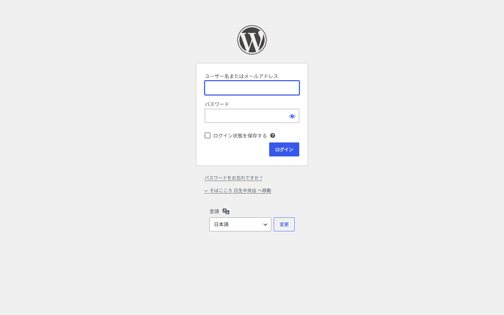
ログイン画面
毎回入力しなくて済むようにする
「ログイン状態を保存する」に ✓ を入れておくと、しばらくの間パスワードの入力を省けます。
また、この画面をお気に入り（ブックマーク）に入れておくと、次から住所を打たずに開けます。
パスワードの取り扱い
パスワードは他の人に教えないでください。
忘れてしまった場合は、ログイン画面の「パスワードをお忘れですか ?」から再設定できます。
2. 管理画面の見方
ログインすると、この画面が出ます。左側のメニューから、やりたいことを選びます。
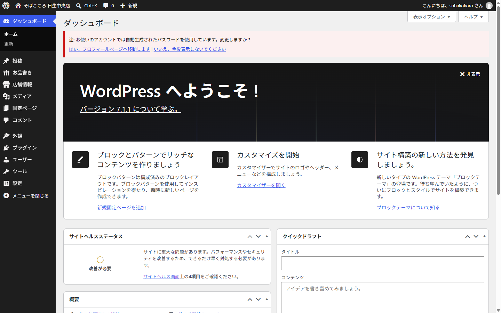
ログイン直後の画面。左のメニューをよく使います
| お品書き | 値段を変える、品を足す、写真を入れ替える |
|---|
| 店舗情報 | 営業時間・定休日・電話番号・住所を変える |
|---|
| 投稿 | お知らせを出す |
|---|
| メディア | 写真の置き場所（ふだんは使いません） |
|---|
この4つだけ覚えれば大丈夫です
ほかの項目（外観・プラグイン・設定など）は、ホームページの作りに関わる部分です。
さわる必要はありません。
3. お品書きの値段を変える
- 左メニューの「お品書き」を押します。全部の品が一覧で出ます。
- 値段を変えたい品の名前を押します。
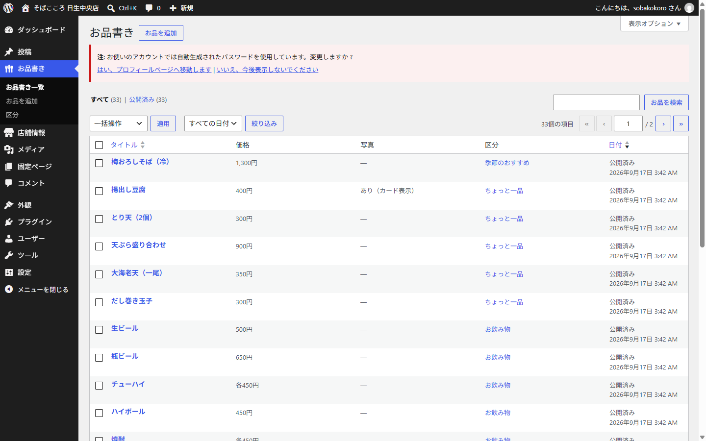
お品書きの一覧。値段と写真の有無がここで確認できます
- 「価格」の欄を書き換えます。
- 右上の「更新」ボタンを押します。これで完了です。
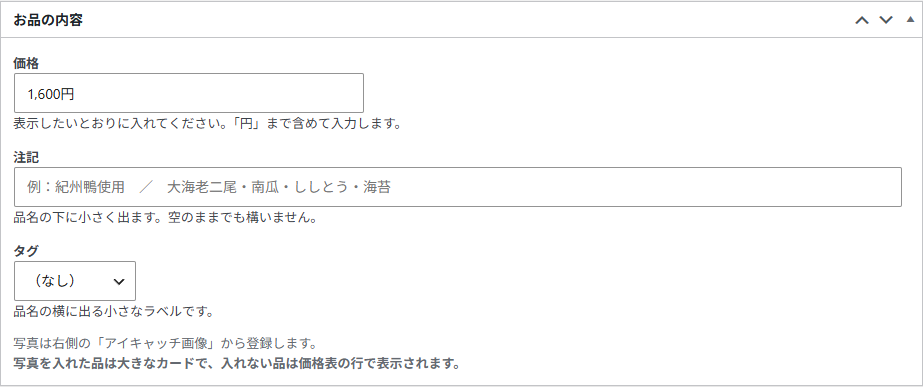
「お品の内容」の欄。価格はここで変えます
値段の入れ方
表示したいとおりに入れてください。「円」まで含めて入力します。
○ よい例：1,650円 ／ +300円 ／ 各450円 ／ 無料
× 悪い例：1650（「円」がないと、そのまま「1650」と表示されます）
注記・タグについて
| 注記 | 品名の下に小さく出る説明です。「紀州鴨使用」など。空でも構いません |
|---|
| タグ | 品名の横に出る小さなラベルです。「数量限定」「お持ち帰り可」「夏」から選べます |
|---|
「更新」を押し忘れないでください
書き換えただけでは反映されません。必ず右上の青い「更新」ボタンを押してください。
押したあと、ホームページを開き直すと変わっています。
4. お品書きに品を足す
- 左メニューの「お品書き」 → 「お品を追加」を押します。
- いちばん上の欄に品名を入れます（例：とろろそば）。
- 「価格」を入れます（例：1,100円）。
- 右側の「区分」で、どこに載せるかを選びます。
- 右上の「公開」ボタンを押します。
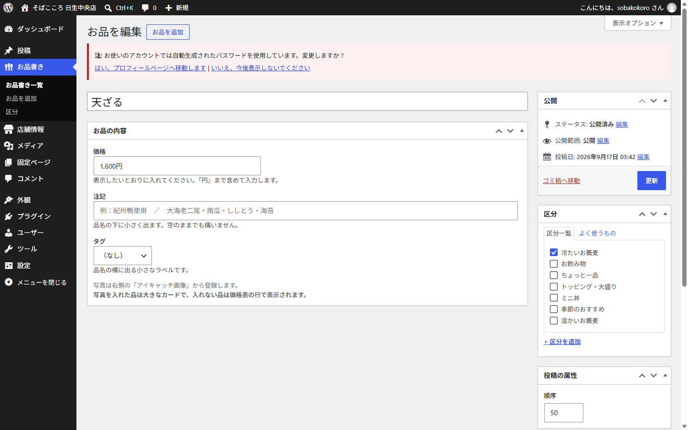
お品の編集画面。左に内容、右に区分と公開ボタンがあります
区分の選び方
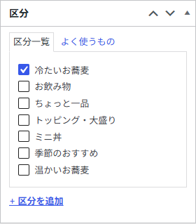
区分は必ず1つ選んでください
区分を選び忘れると、どこにも表示されません
温かいお蕎麦・冷たいお蕎麦・トッピング・ミニ丼・ちょっと一品・お飲み物・季節のおすすめ
のいずれかに ✓ を入れてください。
5. 写真を入れ替える
お品の編集画面を下にスクロールすると、右側に「アイキャッチ画像」があります。
ここがお品の写真です。
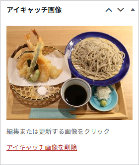
「アイキャッチ画像」＝そのお品の写真です
- 「アイキャッチ画像を設定」（すでに写真がある場合は写真そのもの）を押します。
- 写真を選ぶ画面が開きます。「ファイルをアップロード」タブから新しい写真を入れるか、
「メディアライブラリ」タブからすでにある写真を選びます。
- 右下の「アイキャッチ画像を設定」を押します。
- 最後に右上の「更新」を押します。
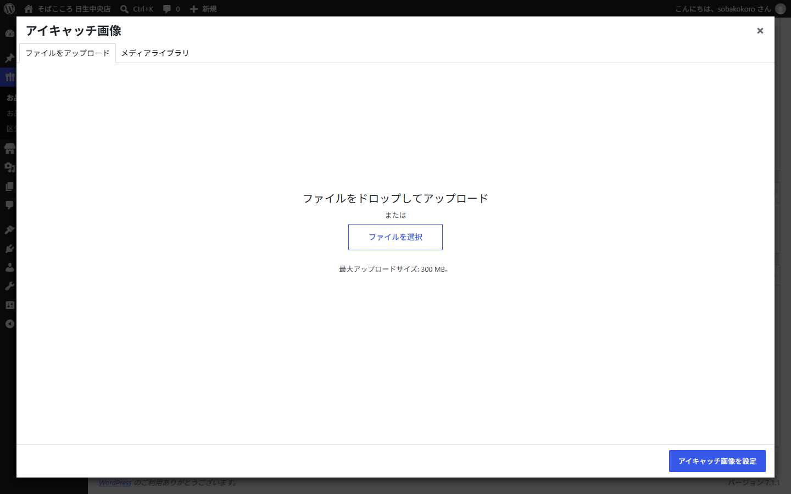
写真を選ぶ画面。左上のタブで「新しく入れる」「すでにある写真から選ぶ」を切り替えます
写真を入れると、見た目が変わります
写真を入れたお品は、大きな写真つきのカードで表示されます。
写真を入れていないお品は、値段表の行として表示されます。
つまり、目立たせたいお品には写真を入れてください。
写真の向きについて
ホームページでは写真が横長（4対3）に切り取られて表示されます。
料理が真ん中に写っている写真を選ぶと、きれいに収まります。
6. 並び順を変える
お品書きの中での並び順は、編集画面の右下にある「順序」の数字で決まります。
数字が小さいものほど上に表示されます。
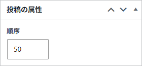
「投稿の属性」の中にある「順序」
- 上に持っていきたいお品の「順序」を、小さい数字に変えます。
- 右上の「更新」を押します。
数字は10とび、20とびにしておくと後が楽です
10・20・30…と間隔をあけておくと、あとから間に入れたいお品が出てきたときに
「15」のような数字で割り込ませることができます。
7. 営業時間・定休日・電話番号を変える
左メニューの「店舗情報」を押します。
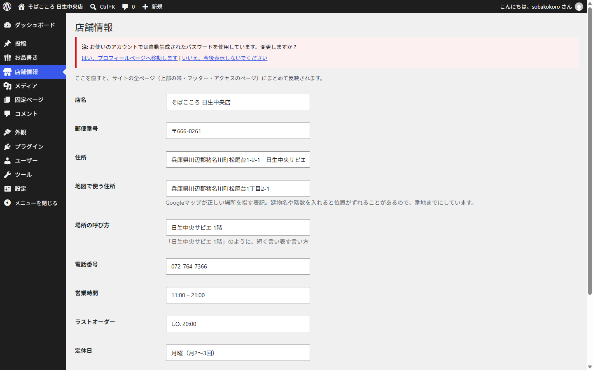
店舗情報の画面。ここがホームページ全体の元になります
ここを直すと、ホームページ全部に反映されます
トップページの帯、ページの下（フッター）、アクセスのページ——
電話番号や営業時間が出ているところすべてが、いっぺんに変わります。
ページを1枚ずつ直す必要はありません。
- 変えたい欄を書き換えます。
- いちばん下の「保存する」ボタンを押します。
それぞれの欄の意味
| 店名 | そばこころ 日生中央店 |
|---|
| 郵便番号・住所 | フッターとアクセスのページに出ます |
|---|
| 地図で使う住所 | Googleマップ用。建物名や階数を入れると地図の位置がずれるので、番地までにしています |
|---|
| 場所の呼び方 | 「日生中央サピエ 1階」のように短く言い表す言い方 |
|---|
| 電話番号 | スマホで押すとそのまま電話がかけられます |
|---|
| 営業時間 | 11:00 – 21:00 |
|---|
| ラストオーダー | L.O. 20:00 |
|---|
| 定休日 | 月曜（月2〜3回） |
|---|
| 駐車場 | 駐車場あり |
|---|
「地図で使う住所」は、むやみに変えないでください
この欄はGoogleマップが正しい場所を指すための表記です。
建物名や階数を足すと、地図のピンがずれてしまうことがあります。
8. お知らせを出す
お知らせは、トップページの上のほうに最新の1件だけが表示されます。
年末年始の休みや、臨時休業のお知らせに使ってください。
- 左メニューの「投稿」 → 「新規投稿を追加」を押します。
- いちばん上の「タイトルを追加」の欄に、お知らせの文章を入れます。
- 右上の「公開」を押します。確認が出たらもう一度「公開」を押します。
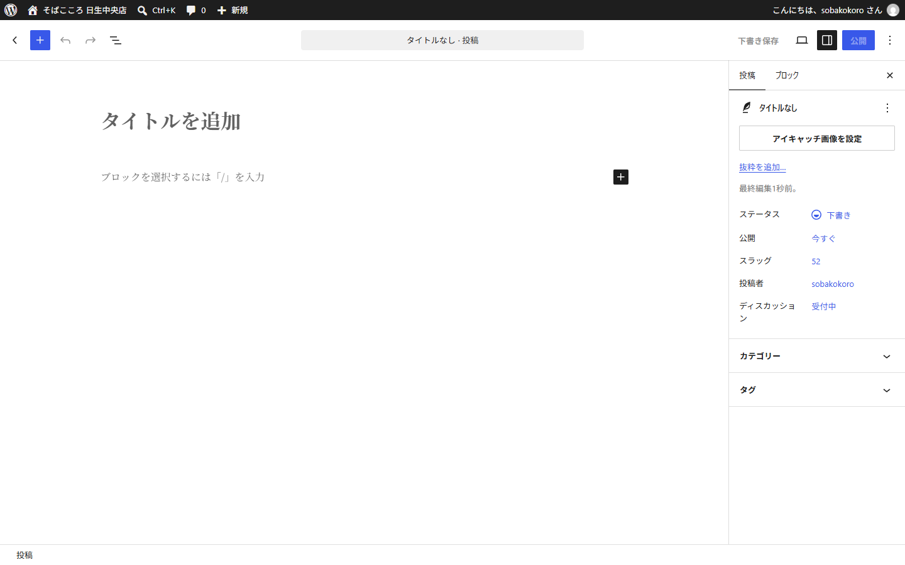
お知らせの作成画面。タイトルだけ入れれば大丈夫です
本文は書かなくて大丈夫です
トップページに出るのはタイトルだけです。
例：「年末年始は12月31日から1月3日までお休みします。」
このように、タイトルに用件をそのまま書いてください。
お知らせを消す・古いものを整理する
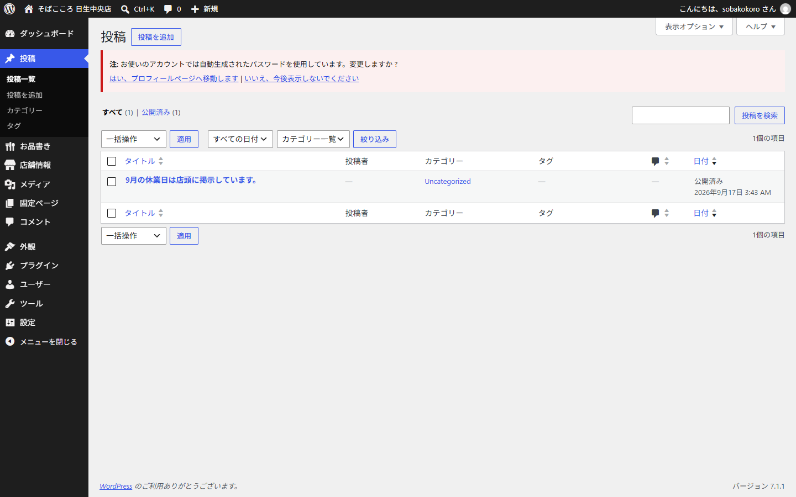
「投稿」を押すと、これまでのお知らせが一覧で出ます
- 左メニューの「投稿」を押します。
- 消したいお知らせにマウスを乗せると「ゴミ箱へ移動」が出るので、押します。
新しいお知らせを出せば、古いものは自動で引っ込みます
トップページに出るのは常にいちばん新しい1件だけです。
古いお知らせを消さなくても、新しく書けば入れ替わります。
9. 困ったとき
変更したのに、ホームページが変わらない
- 「更新」または「保存する」を押したか確認してください。押し忘れが最も多い原因です。
- それでも変わらない場合、パソコンが古い画面を覚えていることがあります。
ホームページを開いた状態でキーボードの Ctrl キーを押しながら F5 キーを押してください。
間違えて消してしまった
消したものはゴミ箱に入っています。すぐには消えません。
- 「お品書き」または「投稿」の一覧を開きます。
- 上のほうにある「ゴミ箱」を押します。
- 戻したいものにマウスを乗せて「復元」を押します。
お品書きに追加したのに、ホームページに出てこない
次の2つを確認してください。
- 区分を選んでいますか（温かいお蕎麦・ミニ丼 など）
- 「公開」を押しましたか（「下書き保存」だけでは表示されません）
写真がぼやける・切れてしまう
ホームページでは写真が横長（4対3）に切り取られます。
料理が真ん中に写っている写真を選んでください。
また、小さすぎる写真はぼやけます。横幅1200ピクセル以上の写真がおすすめです。
それでも解決しないとき
触ってしまっても、元に戻せます
WordPressは変更の履歴を残しています。おかしくなったと思ったら、
触らずに制作者へご連絡ください。
「何をしたら、どうなったか」を教えていただけると、早く直せます。